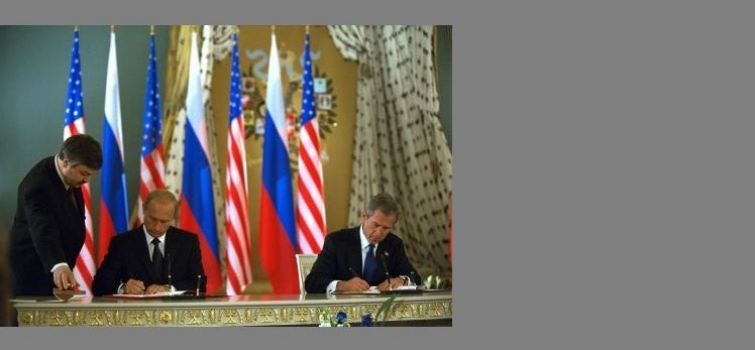

-

President Bush and President Vladimir Putin of Russia sign agreement to reduce each country's nuclear arsenal to between 1,700 and 2,200 warhead.
Secretary Abraham formally recommends to President Bush that the Yucca Mountain site in Nevada be developed as the nation's first long-term geologic repository for high-level radioactive waste.

President Bush visits DOE's Argonne National Laboratory and is briefed on counterterrorism technologies developed by several DOE national Laboratories.
Return to Timeline of Events: 2001
Continue to Timeline of Events: 2003
Jump to month: February | March | April | May | June | July | August | September | October | November | December
January 9, 2002
Against a backdrop of futuristic vehicles at the Detroit Auto Show, Secretary Abraham and executives of Ford, General Motors and DaimlerChrysler announce a new cooperative automotive research partnership between DOE and the U.S. Council for Automotive Research (USCAR). The new research program supercedes the Partnership for a New Generation of Vehicles (PNGV). Secretary Abraham states that the new program, called FreedomCar, will "promote the development of hydrogen as a primary fuel for cars and trucks." He adds that the program will "fund research into advanced, efficient fuel cell technology which uses hydrogen to power automobiles.
January 9, 2002
DOE and Department of Defense officials brief reporters on the Nuclear Posture Review (NPR), a year-long study outlining nuclear force needs over the next five to ten years. From the current number of about 6,000 operationally deployed nuclear warheads, the NPR envisions an eventual level of from 1,700 to 2,200 weapons. Agency officials note that the NPR makes no recommendations about developing new nuclear weapons, but there will be a need to "establish and recover production capabilities" within DOE's nuclear weapons complex in order to be able to refurbish elements of the stockpile later in the decade. While the Bush Administration opposes ratification of the Comprehensive Test Ban Treaty, the officials observe, "we continue to adhere to a test moratorium." At the same time, they indicate, the NPR stresses the "need to improve our readiness posture to test from its current two to three year period to something substantially better."
January 10, 2002
As required by the Nuclear Waste Policy Act, Secretary Abraham notifies Nevada Governor Kenny Guinn and the Nevada Legislature that he intends to recommend to President Bush that the Yucca Mountain site is scientifically sound and suitable for development as the nation's long-term geological repository for nuclear waste. The Secretary notes that there are "compelling national interests that require us to complete the siting process and move forward with the development of a repository."
January 15, 2002
Assistant Secretary for International Affairs and Domestic Policy Vicky Bailey states that the "bookends" of California's energy crisis and the Enron bankruptcy could delay electricity deregulation for several years but would not be its "death knell." Congress has been considering electricity deregulation legislation but has yet to vote on it.
January 17, 2002
The Department announces that it is committing an additional $12 million to operations at the Waste Isolation Pilot Plant (WIPP) near Carlsbad, N.M., increasing shipments of transuranic waste and benefiting the continued cleanup at the DOE's Idaho and Colorado sites. The additional funds will allow DOE to increase the total weekly shipments to WIPP by nearly 50 percent beginning in May.
January 22, 2002
The Department opens the bidding process for industry to exchange up to 22 million barrels of Federal "royalty oil" for oil that will be added to the Strategic Petroleum Reserve. This is the first stage of President Bush's decision to fill the nation's emergency crude oil stockpile announced in November.
January 23, 2002
Secretary Abraham announces that DOE will dispose of 34 metric tons of surplus weapons grade plutonium by turning the material into mixed oxide fuel (MOX) for use in nuclear reactors. The decision follows an exhaustive Administration review of non-proliferation programs, including alternative technologies to dispose of surplus plutonium to meet the non-proliferation goals agreed to by the United States and Russia in September 2000. DOE examined more than 40 disposition alternatives that considered costs, workable technologies, national defense requirements, and compliance with nuclear non-proliferation agreements. Previously, the government endorsed a dual-track approach to dispose of the plutonium including turning some of the material into MOX reactor fuel and immobilizing the remaining plutonium in self-protecting radioactive glass logs for long-term storage. Eliminating immobilization from the disposition pathway saves nearly $2 billion in funding, decreases plutonium storage costs, and facilitates the closure of DOE's former Nuclear Weapons Complex sites.
January 28, 2002
The Department's High Energy Physics Advisory Panel approves a subgroup's draft long-range planning report recommending support for a high-energy, high-luminosity, electron-positron linear collider, preferably to be constructed within the United States. The 800-1000 billion electron volts (GeV) machine would began operation at 500 GeV. If built onshore, the U.S. would contribute an estimated two-thirds of the total project cost of $5 to $7 billion for the initial stage. Among the potential discoveries using the proposed machine are new space-time and/or quantum dimensions.
January 30, 2002
Secretary Abraham announces nuclear nonproliferation project with the Republic of Kazakhstan and private U.S. industry. Under the project, a former nuclear weapons plant in Kazahkstan will develop its capability to separate low-enriched uranium from uranium concentrates with assistance from two private U.S. companies and DOE's Brookhaven National Laboratory. The uranium will then be made available as a power source to civilian power reactors throughout the world.
January 31, 2002
Following a "top-to-bottom" review of the Department's environmental management program, Secretary Abraham previews DOE's new accelerated cleanup plan for the sites of former nuclear weapon plants. The plan creates a new $800 million "Expedited Cleanup Account." To have access to these funds, a site and DOE must reach an agreement on an expedited schedule that shows measurable gains in addressing cleanup and important risks. A site that agrees to participate in the new expedited cleanup plan will receive more resources in the near term than in previous years. "By cleaning up serious problems more quickly under the new plan, our communities will be cleaner and safer," the Secretary notes. "And there is an extra benefit to the taxpayers, because over the long run, the new plan will yield substantial savings on overhead, maintenance and security costs."
Top of page
February 4, 2002
Secretary Abraham releases DOE's Fiscal Year 2003 budget request to Congress, calling it a blueprint to "build a stronger foundation for energy security in the 21st century." The $21.9 billion request is an increase of over $580 million, or 2.7 percent, from the 2002 budget. Of DOE's four "business lines," the National Nuclear Security Administration is $8 billion, up 5.7 percent from 2002; Energy programs are $2.4 billion, down 3.2 percent; Environment is $7.4 billion, up 2.3 percent; and Science programs are $3.3 billion, up 0.1 percent.
February 7, 2002
Secretary Abraham and Secretary of the Interior Gale Norton call upon the Senate to immediately pass a comprehensive energy bill. "It is time for the Senate to pass an energy bill," Secretary Abraham states. "It is in our nation's interest - for the security of our nation's jobs and for the security of our nation's energy supply - that we unite to support swift passage of comprehensive energy legislation."
February 7, 2002
The Department and the U.S. Council for Automotive Research (USCAR), an umbrella group for Ford, General Motors and DaimlerChrysler, agree on goals and timetables for the new FreedomCar program aimed at developing vehicles powered by hydrogen fuel cells. The agreement includes nine goals for developing specific technologies by 2010, including an electric propulsion system, a fuel cell power system, and hydrogen refueling and storage systems.
February 8, 2002
In an address to the Los Angeles World Affairs Council, Secretary Abraham states that he does not have any "higher priority as Secretary than to significantly improve the reach and effectiveness" of the nation's nuclear nonproliferation programs. These programs, he notes, are "about preventing, detecting, and reversing the spread of weapons of mass destruction, while improving nuclear security worldwide."
February 13, 2002
As part of its Environmental Management Program review, DOE announces that 40 percent of the 70 Senior Executives in the Environmental Management (EM) program are being reassigned in order to "strengthen, streamline, and delayer" the leadership of the program. "The purpose of these reassignments is to better leverage the unique talents of these executives, force better integration between the field and headquarters of the real, on-the-ground challenges confronting the program, and to stimulate new thinking and creative solutions to our cleanup challenges," Assistant Secretary of Environmental Management Jessie Roberson states.
February 14, 2002
In an address before the National Oceanic and Atmospheric Administration, President Bush announces the Clear Skies Initiative to cut power plant emissions and commits the nation to an aggressive strategy to cut greenhouse gas intensity by 18 percent over the next 10 years. The President states that his budget devotes $4.5 billion to addressing climate change, and he cites DOE's contribution of "$588 million towards the research and development of energy conservation technologies. . . . $408 million toward research and development on renewable energy."
February 14, 2002
Secretary Abraham formally recommends to President Bush that the Yucca Mountain site in Nevada be developed as the nation's first long-term geologic repository for high-level radioactive waste. "I have considered whether sound science supports the determination that the Yucca Mountain site is scientifically and technically suitable for the development of a repository," the Secretary informs the President. "I am convinced that it does. The results of this extensive investigation and the external technical reviews of this body of scientific work give me confidence for the conclusion, based on sound scientific principles, that a repository at Yucca Mountain will be able to protect the health and safety of the public when evaluated against the radiological protection standards adopted by the Environmental Protection Agency and implemented by the Nuclear Regulatory Commission." The Secretary also notes that there are "compelling national interests" that require development of a repository, including energy and national security, homeland security, nuclear nonproliferation policy, secure disposal of nuclear waste, and ongoing efforts to clean up the environment at former nuclear weapons production sites.
February 15, 2002
President Bush notifies Congress that he considers Yucca Mountain qualified for a construction permit application. The President urges Congress to "undertake any necessary legislative action on this recommendation in an expedited and bipartisan fashion."
February 15, 2002
Secretary Abraham unveils the Nuclear Power 2010 initiative aimed at building new nuclear power plants in the United States before the end of the decade. DOE proposes to invest $38.5 million in FY 2003 as part of a multi-year program to partner with the private sector to explore both federal and private sites that could host new nuclear plants; to demonstrate the efficiency and timeliness of key Nuclear Regulatory Commission licensing processes designed to make licensing of new plants more efficient, effective and predictable; and to conduct research needed to make the safest and most efficient nuclear plant technologies available. The Secretary announce awards to two nuclear utilities, Exelon and Dominion Resources, to conduct initial studies of several sites that could eventually host new nuclear power plants. Both privately-owned sites and DOE's own Idaho National Engineering and Environmental Laboratory (INEEL), Savannah River Site in South Carolina (SRS), and the Portsmouth site in Ohio will be considered in the site selection process.
February 15, 2002
Senate Majority Leader Thomas Daschle (D-South Dakota) brings the energy bill to the floor.
February 22, 2002
The General Accounting Office files suit against the Bush Administration to obtain records of the energy panel chaired by Vice President Cheney.
February 23, 2002
In his weekly radio address, President Bush promotes his energy plan and passage of the energy bill by the Senate.
February 25, 2002
In remarks from the South Lawn of the White House, with Secretary Abraham and EPA Administrator Christie Todd Whitman in attendance, President Bush emphasizes the benefits of energy efficiency through technology and urges the Senate to act on the energy bill
February 25, 2002
In a report to Congress, Under Secretary for Nuclear Security and Administrator of DOE's National Nuclear Security Administration John Gordon announces the decision to eliminate a layer in NNSA's field management and streamline the operation of the nation's nuclear weapons complex.
February 27, 2002
In the Natural Resources Defense Council's suit to force DOE to produce documents relating to the Bush Administration's energy panel, a Federal court orders DOE to turn over most of the documents by March 25.
Top of page
March 4, 2002
The Department releases a solicitation offering $330 million in Federal matching funds for industry proposed clean coal technology projects. The solicitation is the first competitive stage of President Bush's $2 billion, 10-year clean coal technology initiative.
March 4, 2002
Researchers at DOE's Oak Ridge National Laboratory (ORNL) and two other research facilities using a tabletop system report results that suggest the possibility of nuclear fusion reactions during the explosive collapse of bubbles in liquid. ORNL officials state that the results suggest the need for additional experiments.
March 6, 2002
Secretary Abraham announces that DOE, EPA, and the State of Washington have agreed to accelerate cleanup of the DOE's Hanford operations. Under the plan, the parties will work to complete cleanup operations at Hanford 35 to 45 years sooner than the current estimated completion date of 2070. This is the first agreement reached under DOE's new Environmental Management Accelerated Cleanup Program. Funding requests for environmental management activities at the Hanford site will increase by $433 million as details of the accelerated cleanup plan are finalized, bringing the total budget request to more than $2 billion in Fiscal Year 2003 for the Hanford Site.
March 6, 2002
Secretary Abraham tells the House Appropriations Subcommittee on Energy and Water Development that DOE's FreedomCar program could help create a mass market for hydrogen-fueled vehicles by 2035.
March 8, 2002
President Bush signs the economic stimulus bill that includes several tax credits that benefit energy producers and consumers. These include an estimated $1 billion tax credit for power generators producing electricity from renewable sources and about a $150 million tax credit for consumers purchasing electric vehicles.
March 12, 2002
Secretary Abraham signs an an Implementing Agreement today with the Uzbek Minister of Foreign Affairs, Abdulaziz Kamilov, to facilitate cooperation on nuclear nonproliferation between the United States and Uzbekistan. As a result, the United States will begin work to repatriate to Russia highly enriched uranium fuel from a research reactor in Uzbekistan. The Uzbekistan government in turn has pledged to convert the reactor to use low-enriched uranium, the more proliferation-resistant form of reactor fuel. DOE's National Nuclear Security Administration will assist this conversion and aid Uzbekistan in the safe and secure storage of its nuclear materials.
March 13, 2002
The Senate strikes a provision of the energy bill that would increase fuel efficiency standards (known as Corporate Average Fuel Economy or CAFE standards) for cars, sport utility vehicles, and pickup trucks by 50 percent over 13 years. The Senate votes instead for an amendment that gives the Bush Administration two years to develop mileage rules.
March 14, 2002
Acting Director of DOE's Office of Science James Decker tells the joint DOE/National Science Foundation Nuclear Science Advisory Committee that the Laboratory Technology Research (LTR) program will be discontinued. The LTR program was set up in the early 1990s to promote technology transfer of energy innovations through cooperative research and development agreements (CRADAs) between DOE laboratories and private industry. The LTR program has been labeled "corporate welfare," Decker notes, and "Congress has whacked away at it over the years. It's become sub-critical in size."
March 25, 2002
The Department releases over 11,000 pages of information related to DOE's involvement with the National Energy Policy Development Task Force.
Top of page
April 8, 2002
Nevada Governor Kenny Guinn vetoes President Bush's decision to proceed with the nuclear waste repository at Yucca Mountain. Under the Nuclear Waste Policy Act of 1982, the House and the Senate now have 90 legislative days to override Guinn's veto. If either the House or the Senate sustains the veto through a majority vote, construction at Yucca Mountain cannot go forward.
April 9, 2002
In response to world events, including increased tensions in the Middle East, Iraq's announcement that it will stop exporting oil, and labor problems in Venezuela, Secretary Abraham directs the Energy Information Administration (EIA) to produce its Energy Situation Analysis Report (ESAR) each weekday. The EIA produces the ESAR during emergency situations to monitor events that could cause disruptions in supplies stemming from volatile international situations. In the past, EIA produced the ESAR during Desert Shield/Desert Storm and during the Y2K transition, and has been producing it semi-weekly since October in response to the war on terrorism that resulted from the terrorist attacks on September 11.
April 11, 2002
Secretary Abraham sends a letter to every member of Congress to update them on the circumstances affecting the oil and gas markets and the effect on prices. "Prices for crude oil have risen by over $7 per barrel since late February-an increase of over 30 percent-adding as much as 20 cents per gallon to the retail cost of gasoline," the Secretary tells the members of Congress. "Crude oil prices are rising because of global economic growth, OPEC production restraints, and concern over the current tensions in the Middle East and Venezuela." The Secretary notes that "the Energy Information Administration (EIA) expects an average price of $1.46 for regular grade gasoline over the next six months. However, gasoline prices will peak somewhat higher in certain regions this summer."
April 11, 2002
Secretary Abraham urges South Carolina Governor Jim Hodges to sign a proposed agreement to build a facility to dispose of 34 metric tons of weapon-grade plutonium by fabricating most of it into mixed oxide fuel (MOX) at DOE's Savannah River Site for use in commercial nuclear reactors. The agreement would ensure that the United States would keep its international nuclear nonproliferation commitments to the Russian Federation. In the proposal, DOE agrees to "maintain a pathway" out of South Carolina for any plutonium brought into the state. Governor Hodges calls the proposal acceptable but says he wants it guaranteed by a consent decree involving the Federal courts.
April 12, 2002
Secretary Abraham calls Governor Hodges request for a consent decree "irresponsible" and inappropriate. "I hope that rather than electing to throw this matter into litigation, thereby vastly complicating its resolution," the Secretary tells Hodges, "you will reconsider, accept the proposal I have offered, [and] sign the proposed agreement which I believe gives you very substantial protection against a unilateral change of course."
April 15, 2002
The Department notifies the State of South Carolina that shipments of plutonium to the Savannah River Site will begin around May 15. A 30-day shipment notice is required by law.
April 18, 2002
The Senate votes down an amendment to the energy bill that would allow drilling for oil and gas in Alaska's Arctic National Wildlife Refuge.
April 25, 2002
The Senate, by a vote of 88 to 11, approves the energy bill. The bill contains $14 billion in tax breaks primarily to promote conservation and renewable energy sources, has no provisions for drilling in the Arctic National Wildlife Refuge but encourages the construction of an Alaskan natural gas pipeline, requires that renewables make up 10 percent of electrical generation by 2020, and leaves the setting of fuel efficiency standards to the Bush Administration. Secretary Abraham states that he is pleased that the Senate has passed the bill, which contains "a number of important provisions," so that "we can now move forward in conference to get a bill that puts us further on the path to energy security." He notes that when "coupled with the positive elements for increased energy production and conservation in the House-passed bill, we have the tools for creating a bill that's acceptable to both chambers and . . . to President Bush."
Top of page
May 1, 2002
Secretary Abraham announce DOE's electronic government initiative. Known as IDEA (Innovative Department of Energy E-Government Applications), this initiative seeks to ensure that information technology is prudently introduced and managed in order to increase efficiency, improve resource management, simplify processes, and unify information flow across business lines
May 1, 2002
South Carolina Governor Jim Hodges sues the Federal government Wednesday to stop plutonium shipments, scheduled to begin in several weeks, to DOE's Savannah River Site and asks a Federal judge to require a new environmental review.
May 2, 2002
Congressman Lindsey Graham (R-South Carolina) and Senator Strom Thurmond (R-South Carolina) introduce legislation that addresses concerns the State of South Carolina has raised regarding the plutonium disposition program. Secretary Abraham states his appreciation and notes that the "recent filing of a lawsuit by Governor Jim Hodges runs completely counter to any effort to work together to reach a solution. We hope that the Governor would join his own delegation in Congress and work to pass this legislation, and withdraw his ill-timed, unnecessary and counterproductive lawsuit."
May 3, 2002
The Group of Eight (G-8) energy ministers meet in Detroit, Michigan, to discuss issues of common interest. The G-8 comprises the Group of Seven (G-7) nations, Canada, France, Germany, Italy, Japan, the United Kingdom and the United States, plus Russia. Secretary Abraham and the Canadian minister are co-chairs. The G-8 energy ministers agree to support continuing efforts to reduce oil price volatility through greater reliance on market forces, diversification of energy supplies, more efficient energy use and better communications.
May 8, 2002
Secretary Abraham releases the National Transmission Grid Study, developed in response to President Bush's National Energy Policy directive to study the Nation's transmission system, identify transmission bottlenecks and identify measures to eliminate those bottlenecks. The study contains fifty-one specific recommendations.
May 8, 2002
The House of Representatives by a vote of 306 to 117 overrides the State of Nevada's disapproval of the development of the nuclear waste repository at the Yucca Mountain site. Secretary Abraham urges the Senate to "quickly approve our recommendation so that the NRC can make the final determination on the site's suitability to serve as a repository."
May 17, 2002
Secretary Abraham, Secretary of the Interior Gale Norton, and EPA Administrator Christine Todd Whitman, mark the one-year anniversary of the National Energy Policy at a DOE ceremony. "The National Energy Policy's first year has been a notable success," Secretary Abraham notes. "We've already seen a very positive impact. The national energy policy's recommendations have enjoyed broad support in Congress. Of the 22 specific proposals that required legislative action, 21 have either already been enacted into law, or are contained in either the House or the Senate energy bills that are headed to Conference and we expect that a balanced and comprehensive bill will be headed to the President for signature this year."
May 24, 2002
President Bush and President Vladimir Putin of Russia sign agreement to reduce each country's nuclear arsenal to between 1,700 and 2,200 warhead. "Each country," the agreement states, "shall determine for itself the composition and structure of its strategic offensive arms." The two leaders also agree to establish two new bilateral working groups focused on nuclear nonproliferation activities. In addition, they consent to launch a bilateral energy dialogue.
May 29, 2002
President Bush announces plans to buy back the rights for natural gas and oil development in critical parts of the Everglades.
May 30, 2002
Secretary Abraham, tasked with overseeing the two U.S.-Russian working groups on nonproliferation set up by Presidents Bush and Putin, announces the U.S. members of the groups. One of the working groups will examine ways to eliminate excess plutonium and highly enriched uranium that can be used to make nuclear weapons. The second working group, comprised of technical experts, will recommend areas for collaborative research on advanced, proliferation-resistant nuclear reactor and fuel cycle technologies. The Secretary emphasizes that there is "no higher priority" at DOE than the success of the nuclear nonproliferation programs.
May 31, 2002
DOE's National Nuclear Security Administration (NNSA) announces that it will begin conceptual design work for a facility to manufacture plutonium pits for nuclear weapons. Pit production was shut down in 1989 at the Rocky Flats plant, and no pits have been produced since then. The NNSA's plans call for the new facility to be on line by 2020.
Top of page
June 3, 2002
The four-day Future Car Congress, sponsored by DOE and the U.S. Council for Automotive Research opens in Arlington, Virginia. The conference addresses issues involved in the development of automotive technologies aimed at reducing the world's transportation energy consumption and minimizing vehicle emissions. Special emphasis is directed at recent developments in fuel-cell technology. More than 800 people from the transportation and related industries attend.
June 4, 2002
Secretary Abraham co hosts the third U.S.-African Energy Ministerial Conference held in Casablanca, Morocco, and delivers the keynote speech. Approximately 300 representatives from energy ministries, non-governmental organizations, and the private sector are in attendance. The conference focus is on development of the energy sector in African economies and support of accessible, environmentally safe, and affordable energy supplies in Africa. Prior to the conference opening, the Secretary and the Moroccan Energy Minister sign an agreement to expand the work of the Renewable Energy Development Center of Morocco to train Moroccan and other African technicians in renewable energy systems.
June 6, 2002
In an address to the nation, President Bush proposes the formation of the new cabinet-level Homeland Security Department. In the "most extensive reorganization of the federal government since the 1940s," the President states, the "new agency will control our borders and prevent terrorists and explosives from entering our country. It will work with state and local authorities to respond quickly and effectively to emergencies. It will bring together our best scientists to develop technologies that detect biological, chemical, and nuclear weapons, and to discover the drugs and treatments to best protect our citizens. And this new department will review intelligence and law enforcement information from all agencies of government, and produce a single daily picture of threats against our homeland." Secretary Abraham comments that the move will "strengthen America against future terrorist threats." Administrator of DOE's National Nuclear Security Administration John Gordon notes that "NNSA's scientists, engineers and program managers have worked ably to support the fight against terrorism" and will cooperate in formation of the new department.
June 10, 2002
Secretary Abraham unveils the Bush Administration's new Innovations in Nuclear Infrastructure and Education (INIE) program and awards $5.5 million to four consortia of universities. The program encourages universities to make new investments in their research reactor and nuclear engineering programs while establishing strategic partnerships with national laboratories and industry. "If we are to meet the energy, environmental and medical challenges of the future," the Secretary notes, "then initiatives like these are absolutely critical to preparing the next generation of nuclear engineers and scientists."
June 10, 2002
Secretary Abraham, Canadian Natural Resources Minister Herb Dhaliwal, and Mexican Energy Secretary Ernesto Martens release North America - The Energy Picture, the first report of the North American Energy Working Group. The report provides a range of energy information for the three countries. "This document," declares the Secretary "is a result of the hard work ongoing on many fronts under the North American Energy Working Group, one of the highest priorities of President Bush."
June 13, 2002
The Federal Energy Regulatory Commission approves an agreement on a $306 million upgrade to the Path 15 transmission line in California. The agreement is the result of efforts by DOE's Western Area Power Administration (WAPA), responding to a May 2001 directive from Secretary Abraham, to put together a public-private partnership to resolve the longstanding congestion problem along the line.
June 14, 2002
Secretary Abraham announces plans to proceed with the Center for Functional Nanomaterials at DOE's Brookhaven National Laboratory. The $85 million facility will house nanoscience research, which the Secretary in his remarks maintains "offers the potential for a second industrial revolution." Possible applications include highly efficient solar cells, superconducting materials for vastly improved energy transmission, microscopic chemical factories, self-repairing materials, and machines smaller than a human cell.
June 17, 2002
The Department and the United States Enrichment Corporation sign an agreement to ensure that the nation's domestic uranium enrichment capacity is maintained and that enriched uranium from dismantled nuclear weapons in Russia will be delivered to the U.S. The agreement establishes "future development viability and opportunity" for DOE's gaseous diffusion plants in Paducah, Kentucky, and near Portsmouth, Ohio. "Not only is this agreement a win for national security," notes Secretary Abraham, "but it is also a win for the communities in Ohio and Kentucky."
June 18, 2002
A Federal District Court judge orders South Carolina Governor Jim Hodges not to blockade plutonium shipments to DOE's Savannah River Site. Governor Hodges says that the state will honor the order. Secretary Abraham announces that DOE will proceed with shipments from the DOE's Rocky Flats site.
June 18, 2002
President Bush transmits to Congress legislation to establish the new Department of Homeland Security. As proposed, some DOE programs and elements would shift to the new agency.
June 20, 2002
Secretary Abraham announces security policy reforms related to science programs to be implemented throughout DOE and its laboratory complex.
June 27, 2002
John Gordon, first administrator of DOE's National Nuclear Security Administration, resigns to join the National Security Council.
June 28, 2002
House-Senate conference committee begins consideration of the comprehensive Energy Bill. Secretary Abraham, in a letter to the lawmakers outlining the Bush Administration's positions, stresses tax credits to promote renewable energy and alternative fuel production, opposes the Senate climate change provisions, supports House provisions to open the Arctic National Wildlife Refuge to oil and gas drilling, and argues against unilateral ban on fuel purchases from Iraq.
Top of page
July 1, 2002
Secretary Abraham tours the Kansas City Plant, a facility of DOE's National Nuclear Security Administration that assembles and manufactures a wide array of nonnuclear mechanical, electronic, and engineered material components for national defense systems. The Secretary views micro-miniature technologies that enhance weapons surety and safety, reservoirs that provide support for limited life components, trailers equipped to securely transport components throughout the DOE complex, and a flexible manufacturing system where components are produced faster and more reliably.
July 1, 2002
Secretary Abraham announces an agreement with the Republic of Kazakhstan and private U.S. industry to convert a former nuclear weapons facility to the commercial production of copper beryllium master alloy, a component in a range of products including small appliances and computers.
July 8, 2002
In a letter to President Bush, Secretary Abraham, the Secretaries of Commerce and Agriculture, and the Administrator of the Environmental Protection Agency, submit recommendations to improve and expand a voluntary reporting system that encourages greenhouse gas emission reductions and creates a new transferable credit system for those reductions. The current Voluntary Reporting of Greenhouse Gases, created by the 1992 Energy Policy Act and managed by DOE's Energy Information Administration, has been operational since 1994.
July 8, 2002
At Secretary Abraham's recommendation, President Bush designates Ambassador Linton Brooks as Acting Administrator of DOE's National Nuclear Security Administration (NNSA). Brooks has been Deputy Administrator for Nuclear Nonproliferation at NNSA.
July 9, 2002
The Senate by a vote of 60 to 39 overrides the State of Nevada's disapproval of the development of the nuclear waste repository at the Yucca Mountain site. "America's national, energy, and homeland security, as well as environmental protection is well-served by siting a single nuclear waste repository at Yucca Mountain," notes Secretary Abraham. "Congress has recognized that the Government has safely transported nuclear waste for more than 30 years and, in doing so, has rejected the transportation scare tactics employed by those opposed to Yucca Mountain. Without Yucca Mountain, the nuclear waste simply stays where it is. However, by moving the process forward, we have the opportunity to dispose of nuclear waste that has piled up at 131 sites in 39 states."
July 12, 2002
The Department, the Environmental Protection Agency, and the State of South Carolina announce an agreement to accelerate cleanup at the DOE's Savannah River Site (SRS). Under the agreement, the parties will work to complete cleanup activities at SRS by 2025. The Department is setting aside $216 million under the Accelerated Cleanup Reform Account for SRS.
July 15, 2002
Secretary Abraham announces a major mission realignment of DOE's Idaho National Engineering and Environmental Laboratory's (INEEL), establishing the site as the nation's leading center of nuclear energy research and development. INEEL will receive an additional $5 million in funding to "jump-start" the transition of the site from DOE's Office of Environmental Management to the Office of Nuclear Energy. "Environmental cleanup remains a priority," states the Secretary, but "INEEL will be the epicenter of our efforts to expand nuclear energy as a reliable, affordable, and clean energy source for our nation's energy future."
July 22, 2002
President Bush visits DOE's Argonne National Laboratory and is briefed on counterterrorism technologies developed by several DOE national Laboratories. Following the briefing, the President speaks to employees about the importance of new technologies to national security and the proposed Department of Homeland security.
July 23, 2002
Secretary Abraham announces five major research awards for post-genomic research totaling $103 million over the next five years. The awards are part of the DOE's new Genomes to Life program that plans to take advantage of solutions that nature has already devised to help solve problems in energy production, environmental cleanup and carbon cycling.
July 26, 2002
The Department issues a request for bids to increase the "royalty-in-kind" exchange program for filling the Strategic Petroleum Reserve by an additional 40,000 barrels per day.
July 30, 2002
U.S. and Australian officials formally commission the fifth and newest of DOE's Atmospheric Radiation Measurement (ARM) sites in Darwin, Australia, a location that will enable scientists to collect new data important to refining computer models that simulate climate change.
July 31, 2002
Secretary Abraham meets in Moscow with Russian government officials as part of a three nation trip with the goals of improving international cooperation on energy and nuclear nonproliferation matters and promoting President Bush's National Energy Plan. The Secretary says that U.S. concerns about Russian plans to assist Iran in the development of five additional nuclear reactors "have been frankly and directly conveyed during our meetings here." Russian Nuclear Energy minister Aleksandr Rumyantsev indicates that his government will reconsider the plans to assist Iran, taking "political factors" into account.
Top of page
August 5, 2002
At a meeting of the World Nuclear Association in London, Secretary Abraham expounds on the virtues of nuclear power in the debate over global climate change. "It is obvious to me," notes the Secretary, "that an energy source capable of supplying a significant proportion of the world's power with no greenhouse gas emissions should be at the center of this debate." The opponents of nuclear power, he adds, "somehow miss the reality that nuclear power has the same type of benefits touted for renewable energy sources, along with the added virtue of being extraordinarily economical."
August 5, 2002
Department officials dedicate a new Interpretive Center at DOE's Weldon Spring Site in Missouri as 16 years of environmental cleanup draw to a close. Work at the site has focused on the construction of a 45 acre on-site disposal facility, which contains the debris of 44 buildings, four waste pits and one quarry from the former uranium feed materials processing plant. The disposal "cell" is the highest accessible point in St. Charles County and stands seven stories tall. DOE expects to have spent $852 million on the project at completion.
August 6, 2002
The Department, the Environmental Protection Agency, and the State of Tennessee announce an agreement to accelerate cleanup at the DOE's Oak Ridge, Tennessee, sites. Under the agreement, cleanup at the K-25 gaseous diffusion plant located at the East Tennessee Technology Park will reach closure by 2008, and all cleanup at Oak Ridge will be completed by 2015.
August 6, 2002
The Department announces plans to extend the University of California's contract to manage and operate the Lawrence Berkeley National Laboratory through 2007 without opening it up to competition.
August 6, 2002
Workers begin pouring concrete for the five-foot-thick foundation for the new high-level waste vitrification plant at DOE's Hanford site. A work force of 4,800 and more than 250,000 cubic yards of concrete will be required to build the plant.
August 8, 2002
The Department issues final regulations that set forth the procedures it will use in providing assistance to DOE contractor employees who have become ill from exposure to toxic substances while working at DOE facilities in seeking and obtaining state workers' compensation benefits. The regulations implement the program established by Part D of the Energy Employees Occupational Illness Compensation Program Act (EEOICPA) of 2000. "Employees of DOE contractors have performed important work for their country," Secretary Abraham says. "Even though they may have worked for a government contractor, these dedicated individuals are our workers and we are going to take care of them."
August 14, 2002
Guy F. Caruso is sworn in as administrator of DOE's Energy Information Administration.
August 15, 2002
The Department announces that its Oak Ridge National Laboratory has been selected to test the effectiveness of a new Cray Inc. supercomputer architecture in solving important scientific problems in climate, fusion, biology, nanoscale materials, and astrophysics.
August 16, 2002
Secretary Abraham issues an emergency order requested by the Long Island Power Authority directing Cross-Sound Cable Company to temporarily operate the Cross-Sound Cable, allowing power to flow between New Haven, Connecticut, and Long Island, New York. Activation of the cable alleviates the emergency supply situation caused by the area's recent heat wave.
August 22, 2002
Experts from DOE's Office of International Material Protection and Cooperation, working in conjunction with officials from the Department of State and the International Atomic Energy Agency, play a pivotal role in the removal of approximately 50 kg. of highly enriched uranium from the Vinca Institute near Belgrade, Yugoslavia. Secretary Abraham praises the successful collaborative mission as "important forward progress for both U.S. and international nuclear nonproliferation efforts."
August 27, 2002
Secretary Abraham announces that DOE has received 36 proposals for projects valued at more than $5 billion in the first round of President Bush's Clean Coal Power Initiative. This is "the most striking example yet of industry's willingness to invest in a new generation of clean coal technologies," notes the Secretary. "We are especially pleased that these projects propose a variety of advanced technologies that can help meet the President's Clear Skies and Global Climate Change objectives."
August 28, 2002
On a visit to DOE's Ames Laboratory in Iowa, Secretary Abraham participates in a ribbon-cutting ceremony for the Midwest Forensics Research Center, which will serve the needs of regional crime laboratories and expand the capabilities of forensic science.
August 29, 2002
The Department awards contract to design, build, and operate facilities at DOE's Paducah, Kentucky, and Portsmouth, Ohio, sites to convert the government's inventory of depleted uranium hexafluoride (DUF6) for disposal and/or reuse. The Department has about 704,000 metric tons of DUF6 and estimates that the conversion will cost $2.6 billion over the next 25 years.
August 31, 2002
At the World Summit on Sustainable Development in Johannesburg, South Africa, DOE Under Secretary for Energy, Science and Environment Robert Card announces an expanded effort to deploy energy efficient and renewable energy technologies to developing countries.
Top of page
September 5, 2002
At Fire Engine Company No. 3 in Washington, D.C., Secretary Abraham formally transfers the first shipment of refurbished radiological detection equipment to city officials under a new DOE and Department of Justice pilot project called the Homeland Defense Equipment Reuse (HDER) Program. The HDER Program's goal is to provide surplus radiological detection instrumentation and other equipment to state and local emergency first responder agencies nationwide to enhance their domestic preparedness capabilities.
September 5, 2002
The Department's West Valley Demonstration Project (WVDP) successfully completes the nation's first radioactive waste vitrification program. Commencing radioactive operations in 1996, the WVDP immobilized 24 million curies of radioactive waste in 275 glass-filled stainless steel canisters weighing 2.5 tons each.
September 11, 2002
The Department's Fusion Energy Sciences Advisory Committee recommends that the U.S. participate as a full partner in the International Thermonuclear Experimental Reactor (ITER), which includes Canada, Japan, and several European countries.
September 16, 2002
At the 46th International Atomic Energy Agency (IAEA) general meeting in Vienna, Austria, Secretary Abraham in his remarks calls for an international conference to address the risk of a terrorist attack employing a "dirty bomb," a nuclear device that disperses radioactive material but does not produce a nuclear explosion. The Secretary urges that "the international community must do more" to safeguard the low-grade nuclear materials, largely waste from nuclear energy plants, that could be used to make a dirty bomb and adds that "the IAEA is the best and most appropriate vehicle" through which nations can protect the stockpiles of those materials.
September 19, 2002
The Department's Oak Ridge National Laboratory signs an agreement with the United States Enrichment Corporation to develop and demonstrate DOE's highly efficient gas centrifuge technology for enriched uranium production in a test facility with up to 240 full-scale centrifuge machines.
September 19, 2002
The Organization of the Petroleum Exporting Countries decides to hold its production to current levels rather than to increase output to bring down prices, which have been hovering near $30 per barrel.
September 20, 2002
Secretary Abraham announces that the Generation IV International Forum (GIF), comprised of ten leading nuclear nations meeting in Japan, has reached agreement on six Generation IV nuclear energy systems to be pursued for joint development. Generation IV nuclear energy systems are next generation, advanced nuclear reactor and fuel cycle technologies available after this decade but before 2030 that represent significant advances in economics, safety, reliability, proliferation-resistance, and waste minimization.
September 24, 2002
Returning that morning from a week-long, round-the-world trip, Secretary Abraham in a speech tells a meeting of the U.S. Chamber of Commerce that the Bush Administration has been doing its part to implement a new national energy strategy for the U.S. and calls on Congress to do its part by passing a comprehensive energy bill.
September 28, 2002
The Los Alamos National Laboratory conducts Watusi, a spectacular high-explosives experiment with a yield equivalent to about 37,000 pounds of TNT, at the Nevada Test Site's Big Explosive Experimental Facility (BEEF). The experiment seeks to demonstrate that existing seismic and infrasound sensors at the test site and across the West used when DOE was conducting underground nuclear tests still can detect and characterize explosions accurately. Several new diagnostic instruments also are tested.
September 30, 2002
The President's Council of Advisors on Science and Technology unanimously adopts a report calling for increased energy efficiency by improving electricity production at coal-fired plants with high-efficiency generation technologies, such as clean coal systems; making the electricity transmission grid more efficient by installing superconducting technologies; increasing the use of distributed generation technologies; and making more efficient use of electricity through demand-side management.
Top of page
October 1, 2002
The Department marks the 25th anniversary of its establishment in 1977.
October 1, 2002
Secretary Abraham, Secretary of Commerce Don Evans, and the U.S. Energy Association host the U.S./Russia Commercial Energy Summit in Houston, Texas. The summit focuses on the role of public/private partnerships for international energy development. As part of the summit, the Secretary and Russian Minister of Energy Igor Yusufov visit DOE's Strategic Petroleum Reserve Bryan Mound site in Freeport, Texas.
October 3, 2002
Following discussions with key conferees on the energy bill, Secretary Abraham urges the lawmakers to "complete work on this important national priority before Congress adjourns."
October 8, 2002
Secretary Abraham and four former Secretaries of Energy celebrate the 25th anniversary of the Department at a ceremony at the agency's Washington, D.C., headquarters. In the Anniversary Address delivered to the assembled dignitaries, employees, and former officials, the Secretary notes that during the next 25 years DOE "will be one of the most vital and exciting agencies in the federal government. The mission we all share-enhancing America's energy and national security-is even more profound today than it was in October 1977. October 2002 finds us a nation at war. It finds us a nation facing serious energy challenges over the coming decades. But it is also a nation that finds in us a Department dedicated to meeting the challenges of the future. We have a highly disciplined, highly dedicated workforce capable of meeting those challenges, and a president with great confidence in our ability to do so."
The Secretary also announces that Raymond F. Davis, Jr., a retired scientist at DOE's Brookhaven National Laboratory, has won the Nobel Prize for physics for his pioneering work in the detection of solar neutrinos.
October 14, 2002
Secretary Abraham joins with other government and industry officials in declaring the nation's newest clean coal power plant-the Northside Generating Station in Jacksonville, Florida-fully operational, following a $630 million, five-year effort to install clean coal technology in the 35-year old power station. DOE contributed more than $74 million to the project as one of the original initiatives under its Clean Coal Technology Program.
October 17, 2002
Members of Congress return to their states and districts to campaign for the November 5 election without passing an energy bill. "The administration will continue to push for a bill regardless of the outcome of the election," notes Michael Whatley, principal deputy assistant secretary of energy for congressional affairs, but "it is fair to say that if you have a switch in either the House or the Senate, there will not be a very good likelihood [that a bill will be passed] because you're going to be dealing with reorganization issues."
October 18, 2002
Secretary Abraham hosts a "Renewable Energy Roundtable" in South Dakota. "President Bush and I are convinced that renewable energies must play a large role in meeting our challenging future energy needs and reducing our dependence on foreign oil," the Secretary tells the group. "For every improvement in renewable energy technology we develop, for every new megawatt of electricity or gallon of alternative fuel that is produced, we make our nation a little more secure."
October 23, 2002
Secretary Abraham announces $10 million in awards for multi-year research projects under DOE's Nuclear Energy Research Initiative (NERI). Designed to address key scientific and technical issues related to expanded use of nuclear energy, NERI, notes the Secretary, "is at the core of the Department's nuclear research program."
October 23, 2002
The Department announces grants totaling $33 million for research projects focusing on challenges faced in cleanup activities at former nuclear weapons production sites. The funds will come from the Environmental Management Science Program, jointly managed by DOE's Environmental Management and Science program offices. The projects are designed to help DOE "make significant strides in nuclear waste cleanup," notes Secretary Abraham, and their success "will be measured in actual cleanup results. We expect these programs to deliver."
October 24, 2002
The 563rd and final shipment of transuranic waste from DOE's Idaho National Engineering and Environmental Laboratory is received at the Department's Waste Isolation Pilot Plant outside Carlsbad, New Mexico. This is ten weeks ahead of the December 31, 2002, deadline set for the removal of the waste in the 1995 Idaho Settlement Agreement. The total amount of transuranic waste shipped was 3,101 cubic meters in 14,909 55-gallon drums.
October 29, 2002
Closing out DOE's observance of Energy Awareness Month, Secretary Abraham and Environmental Protection Agency Administrator Christine Todd Whitman announce the fuel economy leaders for 2003 and unveil the newest edition of the web-based 2003 Fuel Economy Guide.
October 30, 2002
Secretary Abraham celebrates Weatherization Day by praising the DOE's Weatherization Assistance Program for cutting the annual energy bills of five million low-income families across the country.
Top of page
November 5, 2002
In the 2002 mid-term elections, the Republican Party retakes control of the Senate by what will be a two vote margin and maintains control of the House with a 24 seat advantage.
November 12, 2002
Secretary Abraham unveils the National Hydrogen Energy Roadmap to help the nation "chart the course to a hydrogen economy" beginning with a transportation system that relies on vehicles powered by fuel cells. Addressing the DOE-sponsored Global Forum on Personal Transportation in Dearborn, Michigan, the Secretary states that the roadmap "is the result of a 12-month collaborative effort between industry and government to identify the challenges and paths forward." He notes that "whether it is fusion, a hydrogen economy, or ideas that we have not explored, I believe we need to leapfrog the status quo and prepare for a future that under any scenario requires a revolution in how we produce, deliver and use energy."
November 12, 2002
The Secretary also announces, in coordination with officials of the Departments of Transportation and Defense and the Environmental Protection Agency, as well as industry executives, an expanded 21st Century Truck Partnership. "Our goal is to dramatically improve the energy efficiency and safety of trucks and buses, while maintaining a dedicated concern for the environment," the Secretary says. The partnership will center on advanced combustion engines and heavy hybrid drives that can use renewable fuels.
November 13, 2002
The comprehensive energy bill dies in the conference committee as Senate negotiators conclude that time is too short in the few weeks remaining in the "lame duck" session to work out an agreement.
November 13, 2002
Secretary Abraham and International Atomic Energy Agency (IAEA) Director General Mohamed El Baradei meet at DOE Headquarters in Washington, D.C., to discuss joint cooperation between DOE and IAEA on continuing nuclear nonproliferation efforts and other initiatives. At a joint press conference following the meeting, they announce that the U.S., Russia, and IAEA will sponsor a three-day international conference on radiological dispersal devices, or "dirty bombs," in March 2003 in Vienna, Austria.
November 15, 2002
Secretary Abraham announces that the Strategic Petroleum Reserve has reached 592 million barrels. Full capacity is 700 million barrels.
November 15, 2002
The Department's Argonne National Laboratory, located outside Chicago, Illinois, dedicates the Advanced Power-train Research Facility, the nation's only independent testing facility for engines, fuel cells, electric drives, and energy storage. State-of-the art performance and emissions measurement equipment at the facility is designed to enhance the development of advance technology powertrain components for cars and trucks, support model development, and validate advanced vehicle technology.
November 19, 2002
Secretary Abraham announces that International Business Machines Corporation (IBM) has been awarded a $290 million, multi-year contract to build the two fastest supercomputers in the world. Named "Purple" and "BlueGene/L," the two systems will be part of the National Nuclear Security Administration's Advanced Simulation and Computing (ASCI) program for the science-based Stockpile Stewardship Program and will be housed at DOE's Lawrence Livermore National Laboratory. The Secretary notes that "ASCI Purple and BlueGene/L promise to deliver cost-effective, tremendous capability to the Stockpile Stewardship Program's critical mission to assess and certify the safety, security, and reliability of our nation's nuclear deterrent without underground nuclear testing."
November 19, 2002
The Department's Hanford Site in Washington State successfully moves the final shipment of spent nuclear fuel from the 324 Building to safe storage in the Canister Storage Building. The fuel was remotely loaded into a NAC-1 cask in a large airlock radiological control area. Next, the cask was pulled into a "Cask Handling Area" where it was checked by workers for leaks and welded shut for transport in a TC-104 steel container. The fuel collection from the 324 Building measures about 600,000 curies of radioactivity.
November 20, 2002
The Department's Energy Information Agency (EIA), in a preview of its Annual Energy Outlook, projects that petroleum imports are expected to account for 68% of total petroleum demand by 2025, up from the current 55%. Imports made up 42% of supply in 1990 and 37% in 1980. The average world oil price is projected to increase from $22.01 per barrel (2001 dollars) in 2001 to $26.57 per barrel by 2025, largely due to the impact of higher projected world oil demand. In nominal dollars, the average world oil price reaches $48.11 per barrel in 2025. Carbon dioxide emissions from energy use are projected to increase from 1,559 to 2,237 million metric tons carbon equivalent between 2001 and 2025, an average annual increase of 1.5 percent. This projection does not include future policy actions that might be taken to reduce carbon dioxide emissions.
November 22, 2002
In a brief stop in St. Petersburg, Russia, President Bush meets with President Vladimir Putin, and the two leaders issue a joint statement on development of the U.S.-Russian energy dialogue.
November 25, 2002
President Bush signs the Homeland Security Act, establishing the new cabinet-level Department of Homeland Security, and announces his intention to nominate former Pennsylvania Governor Tom Ridge as the department's first secretary. Several current DOE functions and responsibilities are to be transferred to the new agency. DOE's Office of Environmental Management will lose its Environmental Measurements Laboratory in New York City. The National Nuclear Security Administration's nuclear threat assessment and smuggling program will be moved to Homeland Security, as will programs dealing with chemical and biological research connected to nonproliferation and activities related to microbial pathogens. The Lawrence Livermore National Laboratory's advanced scientific computing research program is to be transferred, and, in the event of a national emergency, the authority to direct the Nuclear Incident Response program, also at Livermore, will now belong to the Secretary of Homeland Security. In addition, the new department is directed to enter into agreements with DOE to use the national laboratories to fulfill its mission.
November 25, 2002
Secretary Abraham tours the University of Southern California's Doheny Eye Institute and announces that DOE will commit $9 million over three years to augment artificial retina research directed toward restoring vision to millions of people suffering from blindness.
November 25, 2002
The Department's Los Alamos National Laboratory fires two security guards and places three employees accused of theft on paid administrative leave.
November 26, 2002
Secretary Abraham uses remote control "scissors" to cut an electronic ribbon to dedicate the Molecular Environmental Science (MES) beamline at the Lawrence Berkeley National Laboratory's Advanced Light Source (ALS). The ALS is a synchrotron that accelerates electrons to energies of greater than 1.9 billion electron volts (GeV), focuses them into a tight beam, and sends this beam around the curved path of a storage ring for several hours. Beams of x-ray light can then be extracted and sent down beamlines to research instruments. The MES beamline will provide researchers with the ability to study environmental contaminants at the molecular level.
November 26, 2002
On a visit to DOE's Lawrence Livermore National Laboratory (LLNL), Secretary Abraham presents the Secretary's Gold Award-the Department's highest honorary award-to Dr. Edward Teller, Director Emeritus of LLNL, in recognition of his outstanding contributions to science and national security.
November 27, 2002
Kyle McSlarrow is sworn in as Deputy Secretary of Energy.
Top of page
December 4, 2002
The U.S. Enrichment Corporation announces plans to demonstrate advanced gas centrifuge technology for uranium enrichment at DOE's Portsmouth, Ohio, facility. Following satisfactory demonstration of the technology, a future full-scale uranium enrichment plant will be located either at the Portsmouth site or at DOE's Paducah, Kentucky, facility.
December 9, 2002
The Department's Los Alamos National Laboratory creates the Center for Homeland Security to serve as the key contact point at the laboratory for organizations seeking scientific and technical assistance in areas related to homeland security.
December 10, 2002
The Department's Lawrence Livermore National Laboratory creates the Homeland Security Organization to pull together laboratory scientists into teams to tackle homeland security problems.
December 12, 2002
A Federal Energy Regulatory Commission administrative law judge finds that wholesale power suppliers overcharged the State of California by $1.8 billion from October 2000 through June 2001. The decision must be approved by the full commission.
December 12, 2002
Secretary Abraham, in a ceremony at Santa Fe Indian School in New Mexico, announces that DOE has entered into agreement with the Pueblo Indians of San Ildefonso and the County of Los Alamos to transfer over 2,200 acres of federal land. More than 2,100 acres are being transferred to the Pueblo of San Ildefonso for use in traditional tribal and cultural practices. Over 100 acres are being transferred to the county, including the site of the Manhattan Monument, several parcel by the airport, and more than 75 acres at White Rock.
December 13, 2002
Secretary Abraham announces intent to extend Lockheed Martin Corporation's contract to manage and operate DOE's Sandia National Laboratories for five years noncompetitively, contingent upon successful negotiation of contract terms.
December 16, 2002
Secretary Abraham establishes a high-level Task Force on the Future of Science Programs at DOE. Operating as a subcommittee of the Secretary of Energy Advisory Board (SEAB), the task force will examine science and technology programs across the Department and consider future priorities for scientific research.
December 17, 2002
President Bush signs into law new pipeline safety rules requiring the testing within five years of the riskiest 50 percent of gas pipelines in high-consequence areas. Remaining pipelines are to be tested during the following five years. Pipelines will then have to be retested every seven years.
December 18, 2002
The Department renegotiates Strategic Petroleum Reserve delivery contracts with five oil companies, allowing them to defer December and January deliveries of more than 7 million barrels of crude. The move is in response to concerns about continued labor unrest in Venezuela, the world's fifth largest oil producer. Sharply curtailed exports of oil there have pushed crude prices to a two-month high of more than $30 per barrel.
December 19, 2002
The Nuclear Regulatory Commission reverses a decision by its Atomic Safety and Licensing Board that the potential for terrorism has to be taken into account when considering the environmental effects of proposed nuclear energy facilities. The board had ruled that claims could be made over the potential for terrorist attack against the proposed mixed oxide (MOX) fuel fabrication plant at DOE's Savannah River Site in South Carolina. Among the scenarios put forward was a suicidal air crash of a jumbo jet.
December 19, 2002
A DOE external review team finds "weaknesses" in the Los Alamos National Laboratory's purchase card program. The laboratory has become the subject of intense scrutiny as a number of questionable purchase card transactions have come to light.
December 20, 2002
The Department's National Nuclear Security Administration (NNSA) implements a new organizational structure that eliminates a layer of management and seeks to achieve a 20 percent reduction in federal personnel by the end of Fiscal Year 2004. Three operations offices-at Oakland, Las Vegas, and Albuquerque-will be eliminated, and site offices that oversee contractor operations will now report directly to headquarters. The Oakland office will close; the Nevada office will be reduced in size and concentrate on managing the Nevada Test Site; and the Albuquerque office will become an NNSA Service Center providing procurement, human resources, and other support services to the site offices.
December 20, 2002
The Department's Energy Information Agency (EIA), in Emissions of Greenhouse Gases in the United States 2001, reports that U.S. emissions of greenhouse gases in 2001 totaled 1,883 million metric tons carbon equivalent, 1.2 percent less than in 2000. The 1.2 percent decrease from 2000 to 2001 is the largest percentage annual decline in total U.S. greenhouse gas emissions during the 1990 to 2001 time frame. The EIA attributes the decline to a combination of factors: "a reduction in overall economic growth from 3.8 percent in 2000 to 0.3 percent in 2001; a 4.4-percent reduction in manufacturing output that lowered industrial emissions; warmer winter weather that decreased the demand for heating fuels; and a drop in electricity demand and coal-fired power generation that reduced emissions from electricity generation."
December 20, 2002The Department and the State of Tennessee sign an agreement in principle to set aside approximately 3,000 acres on the northwest portion of DOE's Oak Ridge Reservation for conservation. The conservation easement is intended as a partial settlement of natural resource damages resulting from past research and nuclear weapons production activities in Oak Ridge.
December 23, 2002
The Department's National Nuclear Security Administration issues a Preliminary Notice of Violation to the University of California, contractor for the Los Alamos National Laboratory, for violations of nuclear safety rules and procedures involving the storage of nuclear waste materials.
December 24, 2002
In a letter to University of California President Richard Atkinson, Secretary Abraham states that the government holds the University accountable for its management of DOE's Los Alamos National Laboratory. The existing situation reflects a "systemic management failure" at Los Alamos, the Secretary notes. "I expect the University to continue its efforts to ensure these failures are corrected." The Secretary assigns Deputy Secretary Kyle McSlarrow and Acting National Nuclear Security Administration Administrator Linton Brooks to evaluate the University's operation of the Laboratory and report their results by April 30, 2003.
December 29, 2002
Senator Charles Schumer (D-New York) urges the Bush Administration to release crude oil from the Strategic Petroleum Reserve (SPR) to head off possible supply problems and additional price hikes caused by continuing unrest in Venezuela. "New Yorkers are being socked with a triple whammy this winter: a soft economy, rising unemployment and higher gas and heating oil prices," Schumer notes. "Unfortunately, with the oil strike in Venezuela and continuing unrest in the Middle East, we might not see relief from high oil prices unless something is done quickly." Also calling for a SPR draw down is House Energy and Commerce Committee Chairman Billy Tauzin (R-Louisiana).
Return to Timeline of Events: 2001
Continue to Timeline of Events: 2003